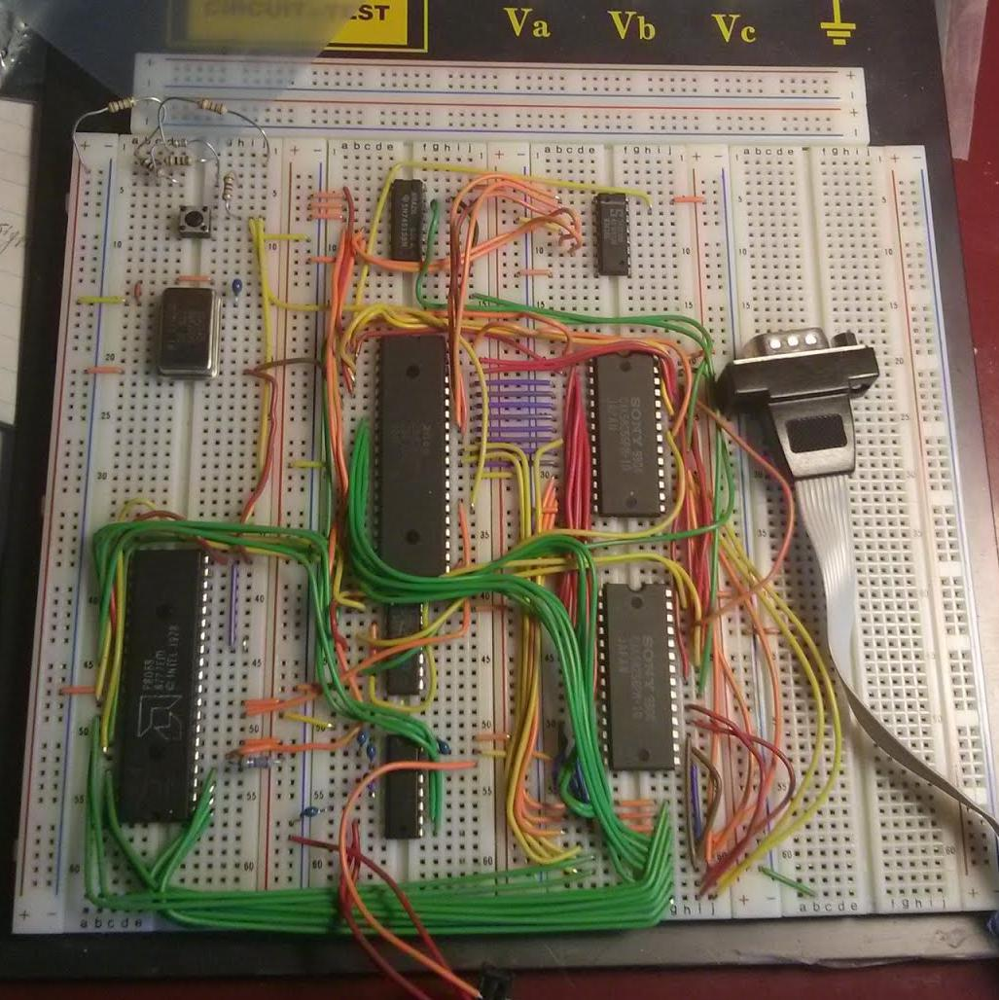
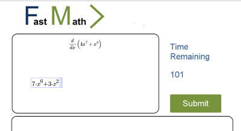

I am a Computer Engineer with a keen passion for interfacing disparate systems together.
In my spare time, I tinker with hardware interfacing projects and keenly watch security conference talks for entertainment and professional development.
Favorite Courses:
Favorite Security Conference Speaker: Felix Lindner
Student Body Involvement: Computer Engineering Club (VP Internal)
Full time Linux user for 10 years. (Arch Linux, Ubuntu, SuSE)

I bread-boarded a Z80-based microcomputer. It has 32K RAM, 32K EEPROM, and uses Z80 SIO for RS232 communications. To program it, I developed my own Arduino-based EEPROM Programmer.
The Arduino-Based EEPROM programmer is unique in that it has an interactive mode. You can query read/write individual bytes and addresses. While facing other issues with the Z80 board, I purchased a commercial EEPROM programmer to verify that mine works correctly and reliably.
To test the programmer and the machine, I wrote a Dual-Endian assembly program. (The test program does the same thing in both byte orders). The program simply goes in an infinite loop. This allowed me to verify that program code fetches were working, that the memory mapped IO worked, and the CPU was clocked and initialized correctly.
I worked with the BMW DIS software to interface with my early 90s BMW. Using an RS232 to ADS cable, I was able to talk to the car.
I debugged and worked around network interfacing problems on the SCO OpenServer-based package. The larger laptop in the picture is acting as a Diagnostic Head Emulator, converting RS232 into an Oracle TNS protocol. The smaller laptop in the photo interacts with the Diagnostic Head on a private network, and contains UI for programming the car modules.
In a team of six, built a multi-threaded Question/Answer application similar to Stack Overflow. We called it Qasper, The Friendly QA App.
Working using the Agile software development methodology, we built an app that has Questions, Answers, and Comments. Questions have Answers, and both Questions and Answers have Comments. All of the above have upvotes attached to them. All posts are searchable by a variety of criteria.
I was responsible for:
Our web-app was centered around SymPy for the symbolic math checking. The idea was to use MathDox for WYSIWYG input, SymPy for checking, and output using a LaTeX to HTML engine.

We ran into a problem when none of the WYSIWYG math input methods produced anything that SymPy could use, since SymPy takes in valid Python expressions. Our library of choice output only MathML. Thankfully, we found an XLST transform that could make MathML into LaTeX. With some work, Stephen was able to make it produce valid expressions for the limited subset of the math we needed to parse
This project can be seen on GitHub.
Technical Judge
School teams from Elementary and Junior High Schools designed and programmed robots using Lego Mindstorms to complete a series of challenges.
Obtained equivalent of the Eagle Scout badge. Volunteered as a counselor for 3 years with a group of 7-11 year old boys. I organized the budget, itinerary, and transportation for a 30-person ski tip. Currently I am writing a web-based online registration system to streamline registration.